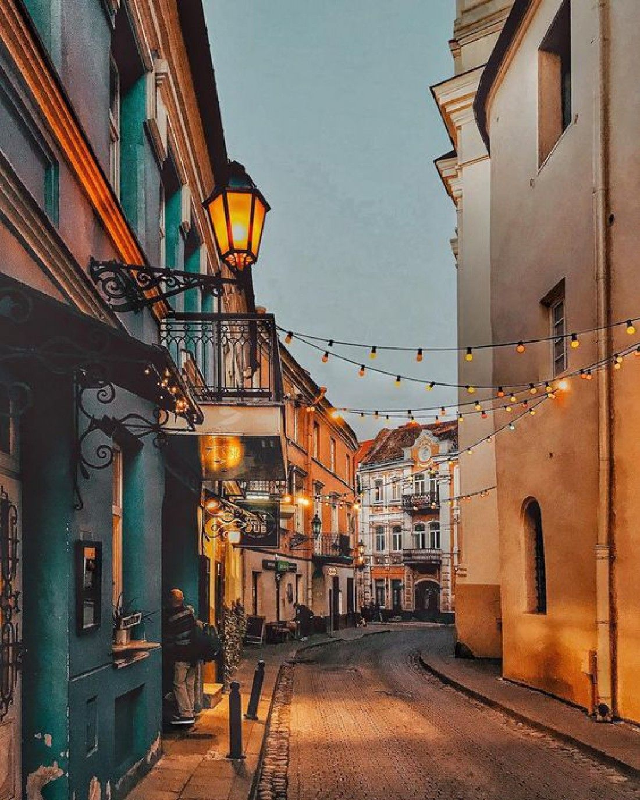

The Old Town of Vilnius (Lithuanian: Vilniaus senamiestis) one of the largest surviving medieval old towns in Northern Europe, has an area of 3.59 square kilometres (887 acres). It encompasses 74 quarters, with 70 streets and lanes numbering 1487 buildings with a total floor area of 1,497,000 square meters. It was founded by the Lithuanian Grand Duke and King of Poland Jogaila in 1387 on the Magdeburg rights the oldest part of the Lithuanian capital of Vilnius [More info]
